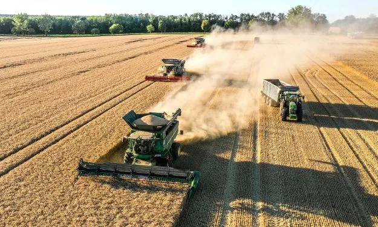
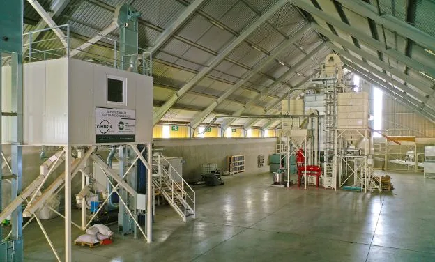
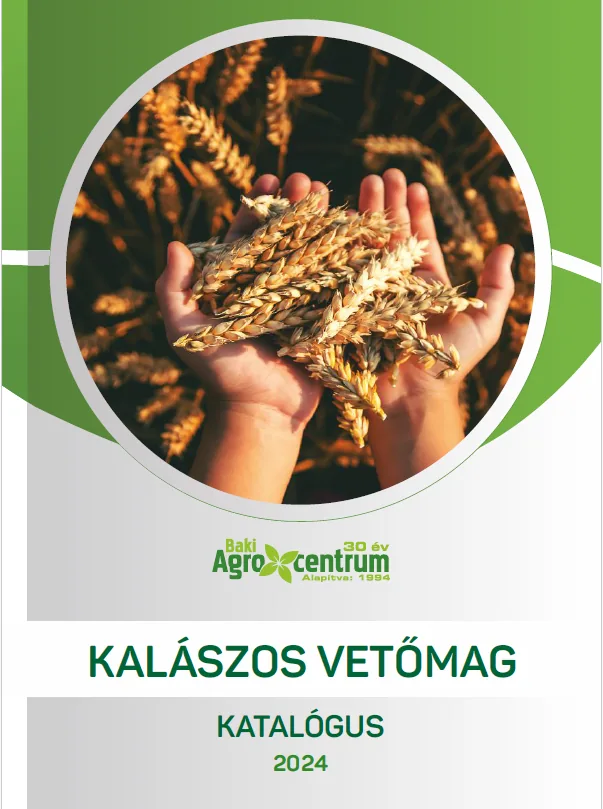

Vetőmag
Fémzárolt kalászos vetőmag, saját termesztésből
Több mint két évtizede szervezünk gabona-, repce- és kukorica-fajtabemutatókat. A helyben jól teljesítő fajtákból a cégcsoport saját vetőmagot állít elő.


Hogyan készül
A fajtabemutatótól a zsákig
A fémzárolt vetőmagot tagcégünk, a Hahóti Várdomb Kft. készíti ki saját üzemében, a barnakpusztai telephelyen.
- 1
Fajtabemutatók
Gabona-, repce- és kukorica-fajtabemutatók a hatékony, hosszú távon megtérülő fajtaválasztáshoz.
- 2
Saját termesztés
A helyben jól teljesítő búza- és árpafajtákat a cégcsoport termelő cégei termesztik.
- 3
Kikészítés
A 2022-ben épült új kalászos vetőmagüzemben, Cimbria gépsorral.
- 4
Csávázás, kiszerelés
Alap- és igény szerinti csávázás, 1000 kg-os BB zsák kiszerelésben.
Fajták
A 2024-es katalógus fajtái
Az üzemi átlag a cégcsoport növénytermesztési üzletágának 2023–2024-es eredménye az adott területen.
| Fajta | Fajtatulajdonos | Kultúra | Minőségi besorolás | Alapcsávázás | Üzemi átlag 2023–24 |
|---|---|---|---|---|---|
| Zebra | Limagrain | Őszi árpa | – | Chambel 6 FS | 8,62 t/ha · 28,7 ha |
| SU Ellen | Saaten Union | Őszi árpa | – | Lamardor active | 8,65 t/ha · 29 ha |
| Jakubus | Saaten Union | Őszi árpa | – | Lamardor active | 8,58 t/ha · 43,6 ha |
| Falado | Syngenta | Őszi búza | B1–B2 (malmi) | Vibrance duo | 9,51 t/ha · 231 ha |
| Passion | Syngenta | Őszi búza | B1–B2 (malmi) | Vibrance duo | 9,56 t/ha · 41 ha |
| Apexus | Saaten Union | Őszi búza | A1–A2 (malmi) | Vibrance duo | 8,38 t/ha · 43,8 ha |
| Cameleon | Saaten Union | Őszi búza | B1–A2 | Vibrance duo | 8,76 t/ha · 91 ha |
| Altigo | Limagrain | Őszi búza | B1–B2 | Lamardor active | 7,82 t/ha · 36 ha |
| Airbus | Limagrain | Őszi búza | A2–B1 | Lamardor active | 8,68 t/ha · 38 ha |
| Absalon | Limagrain | Őszi búza | A2–B1 | Lamardor active | 9,2 t/ha · 33 ha |
| Sofru | Lidea | Őszi búza | Euro | Vibrance duo | 9,00 t/ha · 25 ha |
| MV Nádor | Elitmag | Őszi búza | A2–B1 | Vibrance duo | 8,67 t/ha · 30 ha |
| MV Seuso | Elitmag | Őszi búza | A2–B1 | Lamardor 400 FS | 7,80 t/ha · 40 ha |
Forrás: Kalászos vetőmag katalógus 2024, 4–17. oldal. A „–” jelentése: a katalógus nem ad meg minőségi besorolást. Az aktuális kínálatról és az árakról érdeklődjön elérhetőségeinken.
Kikészítési opciók
Igény szerinti csávázás
Minden fajta a táblázatban jelölt alapcsávázással érhető el. Emellett opcionálisan:
- Rovarölőszeres csávázás – Talajlakó kártevők, különösen a drótférgek ellen nyújthat védelmet.
- Tápanyag-csávázás – Például aminosav vagy tengeri alga. Cél: homogén kelés, gyors fejlődés.
- Baktériumtrágya-csávázás
- Egyéb csávázószer igény szerint – Például Systiva, Vibrance duo.
Az opcionális kikészítést időben kell jelezni, hogy a dokumentációs háttér (egyedi fémzárszám) biztosítható legyen.
Kiszerelés: 1000 kg-os BB zsák.

Kalászos vetőmag katalógus 2024 PDF · 20 oldal · 1,6 MB Megnyitás – új lapon nyílik